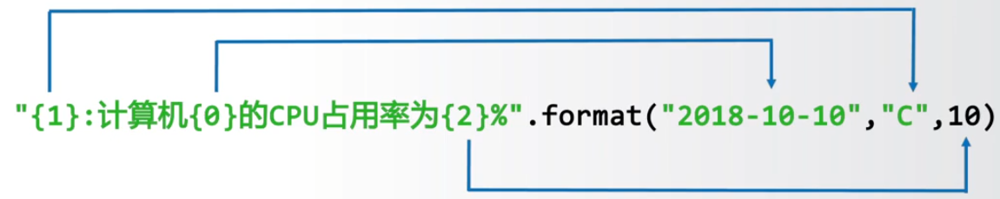
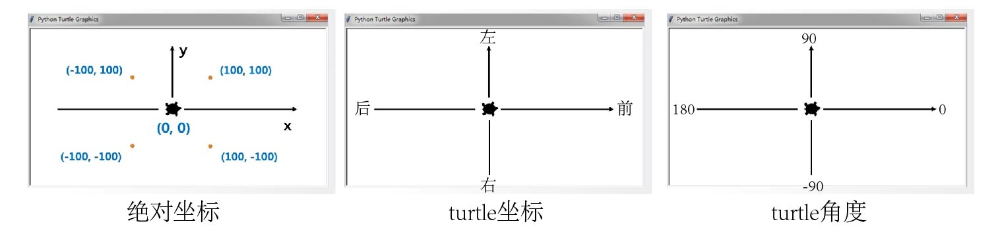

python入门
Last Update:
输入-定义-输出
a, b = input('请输入两个值，用逗号分隔：') #一次输入多个值并用逗号分隔
a, b = input("请输入两个值，用空格分隔: ").split() #一次输入多个值并用空格分隔
x, y = map(int, input("请输入两个整数: ").split()) #一次输入多个值并用空格分隔且格式化为整数
a, b = '','' #一次定义多个数值
print('',end='') #输出完后不换行
print('\r',end='') #覆盖上次的输出
字符串
使用’ ‘或" "
使用’‘’ ‘’'创建多行字符串
索引和切片
正向递增序号0~a
反向递减序号a~-1
<字符串>[M,N,K] M开始，N结束，以步长K获取字符
<字符串>[M,N,-1] 把M到N的字符串倒过来
转义符
1 | |
字符串格式化
槽{}
填充，对齐，宽度 'This is {0:+^10}'.format('PYTHON') >'This is ++PYTHON++'
<左对齐 >右对齐 ^居中对齐
数字处理
1 | |
| : 引导符号 | <填充> | <对齐> | <宽度> | <,> | <.精度> | <类型> |
|---|---|---|---|---|---|---|
| 用于填充的单个字符 | < 左对齐 | 槽设定的输出宽度 | 数字的千位分隔符 | 浮点数小数精度或字符串最大输出长度 | 整数类型：b, c, d, o, x, X | |
| > 右对齐 | 浮点数类型：e, E, f, % | |||||
| ^ 居中对齐 |
示例代码：
1 | |

字符串操作符
也可用于其它序列类型
1 | |
字符串处理函数
1 | |
字符串处理方法
1 | |
组合数据类型
集合类型
- 集合类型天然由不可变数据类型（整数，浮点数，复数，字符串，元组等）组成
- 集合中每个元素唯一，不存在相同元素可用于数据去重
- 集合之间无序
1 | |
| 操作符及应用 | 描述 |
|---|---|
| S|T | 返回S和T的并集 |
| S-T | 返回集合S不在T中的元素集合 |
| S&T | 返回S和T的交集 |
| S^T | 返回S和T中非相同元素的集合 |
| S<=T 或 S<T | 返回blloean值，判断S和T的子集关系 |
| S>=T 或 S>T | 返回blloean值，判断S和T的包含关系 |
| 增强操作符及应用 | 描述 |
|---|---|
| S |= T | 更新集合 S，包括在集合 S 和 T 中的所有元素 |
| S -= T | 更新集合 S，包括在集合 S 但不在 T 中的元素 |
| S &= T | 更新集合 S，包括同时在集合 S 和 T 中的元素 |
| S ^= T | 更新集合 S，包括集合 S 和 T 中的非相同元素 |
集合处理方法
1 | |
元组类型
序列类型：
- 是具有先后关系的一组元素
- 包含字符串类型，元组类型，列表类型
- 可以使用正向递增序号0~a，反向递减序号a~-1 索引
序列通用函数和方法
| 函数和方法 | 描述 |
|---|---|
| len(s) | 返回序列s的长度 |
| min(s) | 返回序列s的最小元素，s中元素需要可比较 |
| max(s) | 返回序列s的最大元素，s中元素需要可比较 |
| s.index(x) 或 s.index(x, i, j) | 返回序列s从i开始到j位置中第一次出现元素x的位置 |
| s.count(x) | 返回序列s中出现x的总次数 |
| sorted(ls) | 返回序列从小到大排序后的新列表 |
元组类型：
- 一旦创建就不能更改
- 可以使用或不使用小括号
1 | |
1 | |
列表类型
创建后可修改
1 | |
列表函数或方法
| 函数 | 描述 |
|---|---|
| ls[i] = x | 替换列表 ls 第 i 元素为 x |
| ls[i:j:k] = lt | 用列表 lt 替换 ls 切片后所对应元素子列表 |
| del ls[i] | 删除列表 ls 中第 i 元素 |
| del ls[i:j:k] | 删除列表 ls 中第 i 到第 j 以 k 为步长的元素 |
| ls += lt | 更新列表 ls，将列表 lt 元素增加到列表 ls 后 |
| ls *= n | 更新列表 ls，其元素重复 n 次 |
| 方法 | 描述 |
|---|---|
| ls.append(x) | 在列表 ls 最后增加一个元素 x |
| ls.clear() | 删除列表 ls 中所有元素 |
| ls.copy() | 生成一个新列表，赋值 ls 中所有元素 |
| ls.insert(i, x) | 在列表 ls 的第 i 位置增加元素 x |
| ls.pop(i) | 将列表 ls 中第 i 位置元素取出并删除该元素 |
| ls.remove(x) | 将列表 ls 中出现的第一个元素 x 删除 |
| ls.reverse() | 将列表 ls 中的元素反转 |
字典类型
- 字典类型是映射的体现
- 字典是键值对的集合，键值对之间无序（键值对：键是数据索引的拓展）
1 | |
| 函数或方法 | 描述 |
|---|---|
| del d[k] | 删除字典 d 中键 k 对应的数据值 |
| k in d | 判断键 k 是否在字典 d 中，如果在返回 True，否则 False |
| d.keys() | 返回字典 d 中所有的键信息，返回字典value类型而非列表类型 |
| d.values() | 返回字典 d 中所有的值信息，返回字典value类型而非列表类型 |
| d.items() | 返回字典 d 中所有的键值对信息 |
| d.get(k, <default>) | 键k存在，则返回相应值，不在则返回<default>值 |
| d.pop(k, <default>) | 键k存在，则取出相应值，不在则返回<default>值 |
| d.popitem() | 随机从字典d中取出一个键值对，以元组形式返回 |
| d.clear() | 删除所有的键值对 |
| len(d) | 返回字典d中元素的个数 |
一维和二维数据格式化
| 一维数据 | 二维数据 | 多维数据 |
|---|---|---|
| 由对等关系的有序或无序数据组成 采用线性方式堆积 |
由多个一维数据构成 是多个一维数据组合形式 |
在前面的类型扩展新的维度形成 |
| 对应列表，数组，集合等 | 表格等 | 表格等 |
| 高维数据 |
一维数据
- 如果数据间有序，使用列表类型
- 如果数据间无序，使用集合类型
一维数据的存储和读取
- 用空格分割 f.write(’ '.join(ls)) <=> ls=txt.split() #ls为列表形式
- 用逗号（特殊符号或组合符号）分隔 f.write(‘,’.join(ls))<=> ls=txt.split(‘,’) #或其他特殊符号，ls为列表形式
- 用换行分割 #\n
二维数据
二维数据统一使用二位列表类型表达
1 | |
csv格式：
- 每行一个一维数据，采用’,'分隔，无空行，逗号与数据之间无空格
- 如果某个元素缺失，需保留’,’
- 表头可以作为数据存储，也可以另行存储
- 数据中包含逗号，可以用,或者","
检索方式：
ls[row][column] #先行后列
读入数据：
1 | |
写入csv：
1 | |
逐一遍历元素：
1 | |
迭代器和生成器
迭代器
迭代器是一个对象，它允许你遍历一个容器（如列表、元组等）中的所有元素，而无需一次性将所有元素加载到内存中
特点：
- 迭代器是惰性的，即只有在需要时才生成下一个元素
- 迭代器可以用于处理大型数据集，因为它不需要将所有数据都加载到内存中
- 迭代器只能向前移动，不能向后移动或重置
- 例如，Python中的文件对象，就是一个迭代器
1 | |
生成器
生成器是一种特殊的迭代器，它使用yield关键字来生成值,每次调用yield时返回一个值并暂停执行,再次调用生成器时，会从上次暂停的地方继续执行
特点：
- 生成器是一种更简洁、更方便创建迭代器的方式
- 生成器自动实现了迭代器协议，因此你可以像使用迭代器一样使用生成器
- 生成器可以用于创建无限序列
- 生成器可以节省大量内存
1 | |
listsort和sorted区别
| 特性 | list.sort() | sorted() |
|---|---|---|
| 修改原始列表 | 是，原地修改列表 | 否，返回一个新的排序后的列表 |
| 适用对象 | 仅适用于列表 | 适用于任何可迭代对象（列表、元组、字符串等） |
| 返回值 | None | 新的排序后的列表 |
| 效率 | 通常更快，因为是原地操作 | 相对较慢，因为需要创建新列表 |
| 灵活性 | 相对较低，只能修改列表本身 | 较高，不影响原始数据，适用于多种场景 |
| 使用场景 | 需要直接修改原始列表且不关心原始顺序时 | 需要保留原始列表或对其他可迭代对象排序时 |
1 | |
数据运算
1 | |
循环和分支结构
if-loop
1 | |
graph TD
A[开始] --> B{判断};
B -- 是 --> C[语句块1];
B -- 否 --> D[语句块2];
C --> E[结束];
D --> E
<表达式1> if <条件> else <表达式2> #紧凑形式
1 | |
match-case
1 | |
for-loop
遍历循环
1 | |
1 | |
enumerate() 用于在循环中同时获取索引和值
1 | |
while-loop
无限循环
1 | |
graph TD
A[条件] --> B{语句块};
B --条件满足True--> A;
B --条件不满足False--> C[结束循环]
try-except
1 | |
graph TD
A[input] --> B{try};
B -- 异常1 --> C[不执行try,执行except1];
B -- 异常2 --> D[不执行try,执行except2];
B -- 无异常 --> E[执行try];
E --> F[else];
C --> G[finally];
D --> G[finally];
F --> G[finally];
G --> H[传递结果]
内置异常类型：
Exception 所有内置异常的基类（不包括 SystemExit、KeyboardInterrupt 等）
BaseException 所有异常的基类（包括 SystemExit 和 KeyboardInterrupt，但一般不直接使用）
TypeError 发生类型错误，例如对整数调用字符串方法
ValueError 传递无效参数，例如 int(“abc”)
IndexError 索引超出范围，例如 lst[10]（列表越界）
KeyError 字典中找不到指定键，例如 dict[‘missing_key’]
NameError 变量未定义，例如 print(undeclared_variable)
AttributeError 访问对象不存在的属性，例如 None.some_method()
ImportError 导入模块失败，例如 import non_existent_module
ModuleNotFoundError 找不到模块（ImportError 的子类）
FileNotFoundError 试图打开一个不存在的文件
OSError 操作系统相关错误，例如文件权限问题
ZeroDivisionError 除数为零，例如 1 / 0
ArithmeticError 所有数学计算错误的基类，例如 ZeroDivisionError
AssertionError assert 语句失败
EOFError input() 在没有输入时触发（如 Ctrl+D 或 Ctrl+Z）
StopIteration 迭代器遍历结束时触发
GeneratorExit 关闭生成器时触发
KeyboardInterrupt 用户手动中断（如 Ctrl+C）
MemoryError 内存不足时触发
RecursionError 递归调用超过最大深度
使用Exception自定义异常：
1 | |
异常发生后允许用户使用ctrl+c终止程序
1 | |
循环保留控制字
break 跳出并结束当前整个循环
continue 跳出当次循环并继续下次循环
pass 占位符，不执行任何操作
函数的定义与使用
1 | |
局部变量和全局变量
怪谈1：基本数据类型，无论是否重名，局部变量与全局变量不同
使用global在函数内部使用全局变量
1 | |
怪谈2：局部变量为组合数据类型且未创建，等同于全局变量，若组合数据类型被创建，则为局部变量
1 | |
lambda函数
常用于特定函数或方法的参数
<函数名>=lambda [<参数>]: <表达式>
1 | |
lambda函数固定使用方式
占位
递归
本质是函数与分支语句的组合，使用判断语句区分基例和链条
需要注意递归时局部变量会被释放
1 | |
默认递归深度为1000，可以使用sys.setrecursionlimit()增加递归深度
文件的使用
1 | |
| 文件的打开模式 | 描述 |
|---|---|
| ‘r’ | 只读模式,默认值,如果文件不存在,返回FileNotFoundError |
| ‘w’ | 覆盖写模式,文件不存在则创建,存在则完全覆盖 |
| ‘x’ | 创建写模式,文件不存在则创建,存在则返回FileExistsError |
| ‘a’ | 追加写模式,文件不存在则创建,存在则在文件最后追加内容 |
| ‘b’ | 二进制文件模式，可单独使用(只读)或放在上面四种类型后面 eg：wb |
| ‘t’ | 文本文件模式,默认值，可单独使用(只读)或放在上面四种类型后面 eg：wt |
| ‘+’ | 与r/w/x/a一同使用,在原功能基础上增加同时读写功能 |
1 | |
| 操作方法 | 描述 |
|---|---|
| 读入全部内容,如果给出参数,读入前size长度 >>>s=f.read(2) 中国 |
|
| 读入一行内容,如果给出参数,读入该行前size长度 >>>s=f.readline() 中国是一个伟大的国家! |
|
| 读入文件所有行,以每行为元素形成列表 如果给出参数,读入前hint行 >>>s=f.readlines() [‘中国是一个伟大的国家!’] |
1 | |
1 | |
| 操作方法 | 描述 |
|---|---|
| 向文件写入一个字符串或字节流 >>>f.write(“中国是一个伟大的国家!”) |
|
| 将一个元素全为字符串的列表写入文件 >>>ls=[“中国”,“法国”,“美国”] >>>f.writelines(ls) 中国法国美国 |
|
| 改变当前文件操作指针的位置,offset含义如下: 0-文件开头;1-当前位置;2-文件结尾 >>>f.seek(0) #回到文件开头 |
1 | |
官方库
os库
- os.path子库，处理文件路径及信息
| 函数 | 描述 |
|---|---|
| os.path.abspath(path) | 返回path在当前系统中的绝对路径 >>>os.path.abspath(“file.txt”) ‘C:\Users\TianSong\Python36-32\file.txt’ |
| os.path.normpath(path) | 归一化path的表示形式,统一用\分隔路径 >>>os.path.normpath(“D://PYE//file.txt”) ‘D:\PYE\file.txt’ |
| os.path.relpath(path) | 返回当前程序与文件之间的相对路径(relative path) >>>os.path.relpath(“C://PYE//file.txt”) ‘…\…\…\…\…\…\…\PYE\file.txt’ |
| os.path.dirname(path) | 返回path中的目录名称 >>>os.path.dirname(“D://PYE//file.txt”) ‘D://PYE’ |
| os.path.basename(path) | 返回path中最后的文件名称 >>>os.path.basename(“D://PYE//file.txt”) ‘file.txt’ |
| os.path.join(path,*paths) | 组合path与paths,返回一个路径字符串 >>>os.path.join(“D:/”,“PYE/file.txt”) ‘D:/PYE/file.txt’ |
| os.path.exists(path) | 判断path对应文件或目录是否存在,返回True或False >>>os.path.exists(“D://PYE//file.txt”) False |
| os.path.isfile(path) | 判断path所对应是否为已存在的文件,返回True或False >>>os.path.isfile(“D://PYE//file.txt”) True |
| os.path.isdir(path) | 判断path所对应是否为已存在的目录,返回True或False >>>os.path.isdir(“D://PYE//file.txt”) False |
| os.path.getatime(path) | 返回path对应文件或目录上一次的访问时间 >>>os.path.getatime(“D:/PYE/file.txt”) 1518356633.7551725 |
| os.path.getmtime(path) | 返回path对应文件或目录最近一次的修改时间 >>>os.path.getmtime(“D:/PYE/file.txt”) 1518356633.7551725 |
| os.path.getctime(path) | 返回path对应文件或目录的创建时间 >>>time.ctime(os.path.getctime(“D:/PYE/file.txt”)) ‘Sun Feb 11 21:43:53 2018’ |
| os.path.getsize(path) | 返回path对应文件的大小,以字节为单位 >>>os.path.getsize(“D:/PYE/file.txt”) 180768 |
-
os.system，处理进程管理，可以执行command命令
os.system(<命令行指令>) -
环境参数
| 函数 | 描述 |
|---|---|
| os.chdir(path) | 修改当前程序操作的路径 >>>os.chdir(“D:”) |
| os.getcwd() | 返回程序的当前路径 >>>os.getcwd() ‘D:\’ |
| os.getlogin() | 获得当前系统登录用户名 >>>os.getlogin() ‘TianSong’ |
| os.cpu_count() | 获得当前系统的CPU数量 >>>os.cpu_count() 8 |
| os.urandom(n) | 获得n个字节长度的随机字符串,通常用于加解密运算 >>>os.urandom(10) b’7\xbe\xf2!\xc1=\x01gL\xb3’ |
time库
1 | |
| 格式化字符串 | 日期/时间说明 | 值范围和实例 |
|---|---|---|
| %Y | 年份 | 0000~9999，例如：1900 |
| %m | 月份 | 01~12，例如：10 |
| %B | 月份名称 | January~December，例如：April |
| %b | 月份名称缩写 | Jan~Dec，例如：Apr |
| %d | 日期 | 01~31，例如：25 |
| %A | 星期 | Monday~Sunday，例如：Wednesday |
| %a | 星期缩写 | Mon~Sun，例如：Wed |
| %H | 小时（24h制） | 00~23，例如：12 |
| %I | 小时（12h制） | 01~12，例如：7 |
| %p | 上/下午 | AM, PM，例如：PM |
| %M | 分钟 | 00~59，例如：26 |
| %S | 秒 | 00~59，例如：26 |
turtle库
1 | |

random库
1 | |
secrets库
1 | |
math库
排列组合
1 | |
第三方库
pip的使用
1 | |
jieba库
用于中文分词
精确模式： 把文本精确的切分开，不存在冗余单词。
全模式： 把文本中所有可能的词语都扫描出来，有冗余。
搜索引擎模式： 在精确模式基础上，对长词再次切分。
| 函数 | 描述 |
|---|---|
| jieba.lcut(s) | 精确模式，返回一个列表类型的分词结果>>>jieba.lcut(‘监听鼠标点击事件’)[‘监听’,‘鼠标’,‘点击’,‘事件’] |
| jieba.lcut(s,cut_all=True) | 全模式，返回一个列表类型的分词结果，存在冗余>>>jieba.lcut(‘监听鼠标点击事件’,cut_all=True)[‘监听’,‘鼠标’,‘标点’,‘点击’,‘事件’] |
| jieba.lcut_for_search(s) | 搜索引擎模式，返回一个列表类型的分词结果，存在冗余>>>jieba.lcut_for_search(‘中华人民共和国’)[‘中华’, ‘华人’, ‘人民’, ‘共和’, ‘共和国’, ‘中华人民共和国’] |
| jieba.add_word(w) | 向分词词典中增加新词w |
pyInstaller库
在命令行下
1 | |
| 参数 | 描述 |
|---|---|
| -h | 查看帮助 |
| –clean | 清理打包过程中的临时文件 |
| -D,–onedir | 默认值，生成dist文件夹 |
| -F,–onefile | 只在dist下生成独立的打包文件 |
| -i <图标.ico> | 指定打包程序的图标文件 |
wordcloud库
词云展示库
w=world.WorldCloud() #注意大小写
| 方法 | 描述 |
|---|---|
| w.generate(txt) | 向WordCloud对象w中加载文本txt, >>>w.generate(“Python and WordCloud”) |
| w.to_file(filename) | 将词云输出为图像文件,.png或.jpg格式 >>>w.to_file(“outfile.png”) |
| width | 指定词云对象生成图片的宽度,默认400像素 >>>w=wordcloud.WordCloud(width=600) |
| height | 指定词云对象生成图片的高度,默认200像素 >>>w=wordcloud.WordCloud(height=400) |
| min_font_size | 指定词云中字体的最小字号,默认4号 >>>w=wordcloud.WordCloud(min_font_size=10) |
| max_font_size | 指定词云中字体的最大字号,根据高度自动调节 >>>w=wordcloud.WordCloud(max_font_size=20) |
| font_step | 指定词云中字体字号的步进间隔,默认为1 >>>w=wordcloud.WordCloud(font_step=2) |
| font_path | 指定字体文件的路径,默认None >>>w=wordcloud.WordCloud(font_path=“msyh.ttc”) |
| max_words | 指定词云显示的最大单词数量,默认200 >>>w=wordcloud.WordCloud(max_words=20) |
| stop_words | 指定词云的排除词列表,即不显示的单词列表 >>>w=wordcloud.WordCloud(stop_words={“Python”}) |
| mask | 指定词云形状,默认为长方形,需要引用imread()函数 >>>from scipy.misc import imread >>>mk=imread(“pic.png”) >>>w=wordcloud.WordCloud(mask=mk) |
| background_color | 指定词云图片的背景颜色,默认为黑色 >>>w=wordcloud.WordCloud(background_color=“white”) |
python程序设计方法
- IPO设计
- 自顶向下设计
自顶向下：适合解决复杂问题的思维方法
1. 将一个总问题表达为多个小问题组成的形式
2. 使用同样方法进一步分解小问题
3. 用计算机简单明了的解决小问题
自顶向上：逐步组件复杂系统的有效测试方法
1. 分单元测试，逐步组装
2. 按照自顶向下相反的路径操作
3. 直至系统各部分以组装的思路都经过测试和验证
- 模块化设计
模块内部紧耦合，模块间松耦合 - 配置化设计
程序执行和配置分离，将可选参数配置化，将开发程序变成配置文件编写，扩展功能而不修改程序 - 接口设计
提高用户体验的方法：
- 进度展示
- 合规性检查及异常处理
- 打印帮助信息